FOTOGRAFIAS
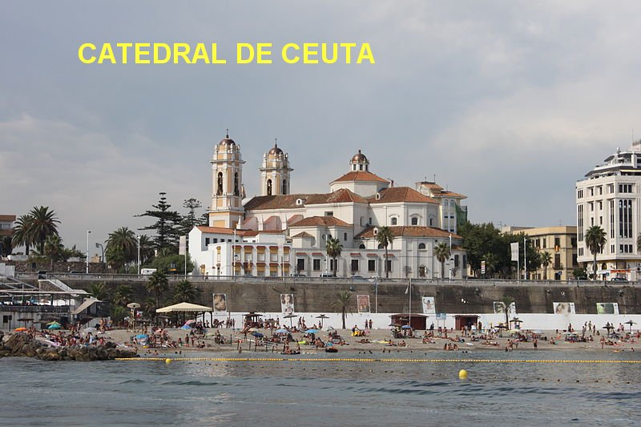
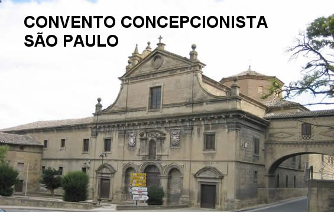
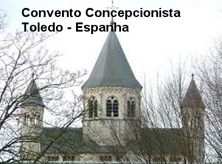
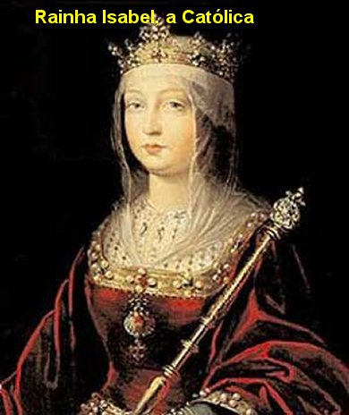
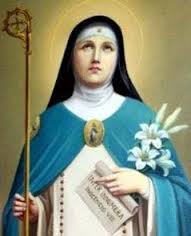
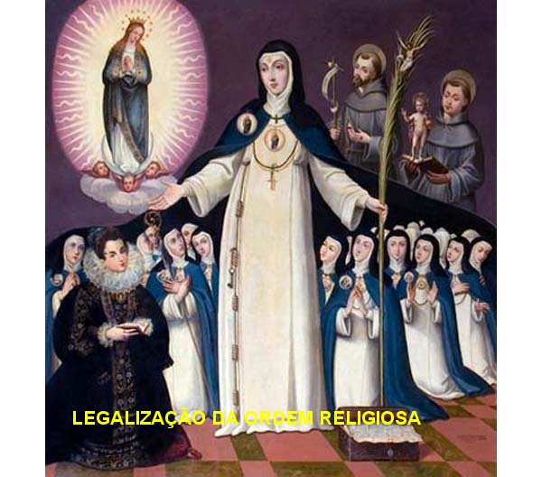
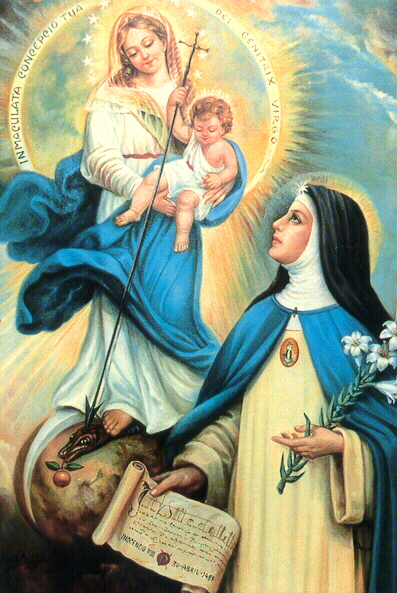
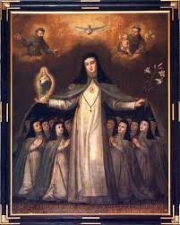
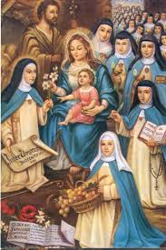
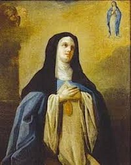
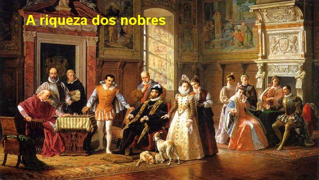
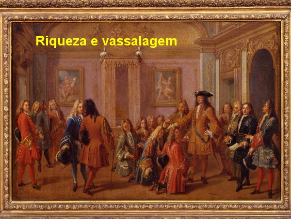
CONVITE
Visite o PORTAL DO APOSTOLADO no endereço abaixo, e tenha a oportunidade de conhecer os nossos Sites, todos eles construídos bem fundamentados na Sagrada Escritura, nas Tradições Cristãs, nas Manifestações Sobrenaturais e na Vida e Obra dos Santos, com o objetivo de informar somente a verdade.
http://www.apostoladosagradoscoracoes.com/
Desejando se comunicar conosco, clicar na figura abaixo:
FIRMAS DE BUSCAS